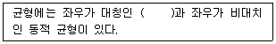
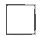
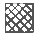
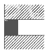

실내건축기능사 (2006-10-01 기출문제)
1과목: 실내디자인
1. 다음 중 반간접 조명의 특징으로 옳은 것은?
- 조명 효율이 좋다.
- 설비비가 일반적으로 싸다.
- 자외선 조명을 할 수 있다.
- 빛이 부드러우며, 눈의 피로가 적다.
(정답률: 74%)

2. 이지적이며, 소극적이고 형식적인 이 균형은 무엇인가?

- 정적균형
- 비례균형
- 공간균형
- 색채균형
(정답률: 69%)
3. 조명 방식에 따른 분류 중 팬던트, 브라켓은 어떤 조명에 속하는가?
- 장식조명
- 전반조명
- 국부조명
- 혼합조명
(정답률: 82%)
4. 게슈탈트(Gestalt) 분리의 법칙 중 접근성을 설명한 것은?
- 2개 이상의 시각요소들이 보다 더 가까이 있을 때 그룹으로 지각될 가능성이 크다.
- 형태, 규모, 색채, 질감 등 서로의 요소가 연관되어 패턴으로 보이는 것이다.
- 유사한 배열이 하나의 묶음으로 지각되는 것이다.
- 시각적 요소들이 어떤 형상을 지각하는데 있어서 패쇄된 느낌을 주는 것이다.
(정답률: 44%)
5. 주거 공간을 기능적으로 꾸미는 디자인은?
- 가구디자인
- 실내디자인
- 공업디자인
- 시각디자인
(정답률: 94%)
6. 통일이 지나치게 강조된 결과는?
- 권태감
- 완고함
- 유쾌함
- 개방감
(정답률: 60%)
7. 다음 중 환경디자인과 관련이 없는 것은?
- 쇼핑몰디자인
- 타이포그라피(Typography)
- 타운플래닝(Town planning)
- 조경디자인
(정답률: 42%)
8. 호텔의 공간구성 중 투숙객이나 외래객의 동선이 시작되고 호텔의 중심 기능이며 호텔의 이미지에 크게 영향을 주는 공간은?
- 프론트
- 그릴
- 로비
- 연회실
(정답률: 80%)
9. 상점계획에 있어서 통로의 최소 폭으로 적당한 것은?
- 60 cm
- 70 cm
- 75 cm
- 90 cm
(정답률: 48%)
10. 실내 공간에 명도가 높은 색을 사용한 효과로 적철치 않은 것은?
- 실내가 밝고 시원하게 느껴진다.
- 차분하고 아늑한 분위기가 조성된다.
- 실제보다 넓어 보인다.
- 경쾌한 분위기가 조성된다.
(정답률: 75%)
11. 실내 조명 설계시 좋은 조명 조건에 맞지 않는 것은?
- 적당한 조도
- 눈부심의 방지
- 적당한 그림자
- 유지 및 보수의 편리성
(정답률: 37%)
12. 천장과 관련된 내용 중 잘못된 것은?
- 천장 재료에는 섬유질을 압축하여 만든 텍스(tex)라는 것이 있다.
- 낮은 천장은 시원한 공간감을 주나 산만한 경우가 있다.
- 천장은 인간을 외부로부터 보호해 주는 역할을 한다.
- 평천장은 가장 일반적인 것으로 단순하여 시선을 거의 끌지 않는다.
(정답률: 82%)
13. 다음 중 실내공간의 색채계획을 할 때 무겁게 느껴지는 것은 무엇의 영향 때문인가?
- 색상
- 명도
- 농도
- 채도
(정답률: 72%)
14. 다음 디자인 원리 중 “디자인이 적용되는 공간에서 인간 및 공간 내에 사물과의 종합적인 연관을 고려하는 공간관계 형성의 특정 기준” 을 말하는 것으로 적당한 것은?
- 대비
- 통일
- 균형
- 스케일
(정답률: 53%)
15. 주택의 평면 계획에 관한 설명으로 틀린 것은?
- 각 실의 관계가 깊은 것은 인접 시키고 상반 되는 것은 격리 시킨다.
- 침실의 독립성을 확보하고 다른 실의 통로가 되지 않게 한다.
- 부엌, 욕실, 화장실은 분산 배치하고 외부와 연결한다.
- 각 실의 방향은 일조, 통풍, 소음, 조망 등을 고려하여 결정한다.
(정답률: 93%)
16. 다음 중 실내의 음향 계획에 관한 설명으로 옳지 않은 것은?
- 모든 실에는 잔향은 짧을수록 좋다.
- 잔향 시간이 길면 말소리를 듣기 어렵다.
- 잔향 시간은 실의 용적에 비례한다.
- 잔향 시간은 실의 흡음력에 반비례한다.
(정답률: 62%)
17. 균일한 조도와 눈에 대한 피로가 적으며 차분한 분위기를 만들 수 있는 가장 적합한 조명방식은?
- 직접 조명
- 국부 조명
- 간접 조명
- 전반확산 조명
(정답률: 84%)
18. 벽체의 열관류량 영향을 주는 것으로 가장 거리가 먼 것은?
- 벽체의 무게
- 벽체 내외의 온도차
- 벽체의 표면적
- 시간
(정답률: 58%)
19. 인체의 열 손실 중 작은 것부터 큰 순으로 나열된 것은?
- 복사, 증발, 대류
- 복사, 대류, 증발
- 대류, 복사, 증발
- 증발, 대류, 복사
(정답률: 43%)
20. 실내 공기의 간접 오염원인에 속하지 않는 것은?
- 흡연
- 의복의 먼지
- 난방기
- 습도의 증가
(정답률: 68%)
2과목: 실내환경
21. 합판의 특성에 대한 설명 중 옳지 않은 것은?
- 단판의 매수는 일반적으로 3겹, 5겹, 7겹 등 홀수 매수로 한다.
- 단판을 서로 직교시켜 붙인 것으로 방향에 따른 강도의 차가 적다.
- 함수율 변화에 따른 팽창·수축의 방향성이 없다.
- 나비가 큰 판을 얻을 수 있지만 곡면판으로 만들 수는 없다.
(정답률: 53%)
22. 악취가 나고, 흑갈색으로 외관이 불미하므로 눈에 보이지 않는 토대, 기둥, 도리 등에 이용되는 목재의 유성 방부제는?
- 황산동 1% 용액
- PCP
- 페인트
- 크레오소트 오일
(정답률: 71%)
23. 이오토막 벽돌의 치수를 옳게 나타낸 것은? (단, 표준형 벽돌이며 단위는 mm 이다.)
- 142.5 × 90 × 57
- 47.5 × 90 × 57
- 190 × 45 × 57
- 95 × 45 × 57
(정답률: 45%)
24. 다음 중 목재에 관한 설명으로 틀린 것은?
- 비내화적이므로 화재에 약하다.
- 흡수성이 크고 신축변형이 크다.
- 열전도도가 낮아 여러 가지 보온재로 사용된다.
- 섬유포화점 이하에서는 함수율이 감소할수록 강도도 감소한다.
(정답률: 53%)
25. 다음의 유리제품에 대한 설명 중 옳지 않은 것은?
- 열선흡수유리는 단열유리라고도 하며 태양광선 중의 장파부분을 흡수한다.
- 강화유리는 열처리한 판유리도 강도가 크고 파괴시 작은 파편이 되어 분쇄된다.
- 복층유리는 방음, 단열 효과가 크며 결로 방지용으로도 우수하다.
- 망입유리는 유리 성분에 착색제를 넣어 색깔을 띄게 한 유리이다.
(정답률: 64%)
26. 내화도가 낮아 고열을 받는 곳에는 적당하지 않지만, 견고하고 대형재의 생산이 가능하며 바탕색과 반점이 미려하여 구조재, 내·외장재로 많이 사용되는 것은?
- 화강암
- 응회암
- 부석
- 점판암
(정답률: 66%)
27. 석회, 규산을 주성분으로 현무암, 안산암, 사문암을 고열로 용융시켜 선상으로 만들고, 이를 냉각시켜 섬유화한 것은?
- 암면
- 질석
- 펄라이트
- 트래버틴
(정답률: 29%)
28. 수화속도를 지연시켜 수화열을 작게 한 시멘트로 댐공사나 건축용 매스콘크리트에 사용되는 시멘트는?
- 초조강 포틀랜드 시멘트
- 조강 포틀랜드 시멘트
- 중용열 포틀랜드 시멘트
- 백색 포틀랜드 시멘트
(정답률: 66%)
29. 돌로마이트 플라스터에 대한 설명 중 옳지 않은 것은?
- 소석회에 비해 작업성이 좋다.
- 변색, 냄새, 곰팡이가 생기지 않는다.
- 회반죽에 비하여 조기강도 및 최종강도가 크다.
- 미장재료 중 건조수축이 가장 작아 수축 균열이 생기지 않는다.
(정답률: 40%)
30. 다음 중 열경화성 수지에 속하는 것은?
- 페놀 수지
- 아크릴 수지
- 폴리아미드 수지
- 염화비닐 수지
(정답률: 52%)
3과목: 실내건축재료
31. 다음 중 PS 콘크리트에 주로 쓰이는 철선은?
- PC 강선
- 이형철근
- 강봉
- 경량 형강
(정답률: 49%)
32. 단열재의 특성 중 옳지 않은 것은?
- 단열재는 열전도율이 적은 재료를 사용한다.
- 단열재료의 대부분은 흡음성도 우수하다.
- 단열재료는 보통 다공질 재료가 많다.
- 단열재료는 역학적인 강도가 크다.
(정답률: 60%)
33. 목재의 기건 상태의 함수율은?
- 0%
- 약 15%
- 약 30%
- 약 50%
(정답률: 77%)
34. 점토에 대한 설명 중 옳지 않은 것은?
- 점토의 비중은 일반적으로 2.5~2.6 정도이다.
- 점토 입자가 미세할수록 가소성은 나빠진다.
- 압축강도는 인장강도의 약 5배 정도이다.
- 점토의 주성분은 실리카와 알루미나이다.
(정답률: 61%)
35. 석재의 일반적 성질에 대한 설명 중 옳지 않은 것은?
- 석재는 압축강도에 비해 인장강도가 특히 크다.
- 일반적으로 흡수율이 클수록 풍화나 동해를 받기 쉽다.
- 열전도율이 작아 열응력이 생기기 쉽다.
- 대체로 석재의 강도가 크면 경도도 크다.
(정답률: 68%)
36. 유리의 성분별 분류 내산, 내열성이 낮고 비중이 크겨 모조보석이나 광학렌즈로 사용되는 유리는?
- 소다석회유리
- 칼륨석회유리
- 칼륨납유리
- 석영유리
(정답률: 14%)
37. 합성수지에 관한 설명 중 옳지 않은 것은?
- 가소성이 크다.
- 흡수성이 크다.
- 전성, 연성이 크다.
- 내열, 내화성이 작다.
(정답률: 31%)
38. 점토 제품의 사용 용도가 가장 바르게 연결된 것은?
- 토기 – 타일, 위생도기
- 도기 - 기와, 자기질 타일
- 석기 – 클링커 타일
- 자기 – 벽돌, 토관
(정답률: 35%)
39. 금속재료에 대한 설명으로 틀린 것은?
- 황동은 동과 주석을 주체로 한 합금이다.
- 납은 관 및 판상으로 위생공사나 X선실에 이용된다.
- 주석은 주조성, 단조성이 양호하므로 각종 금속과 합금화가 용이하다.
- 동은 전성과 연성이 크며 쉽게 성형할 수 있다.
(정답률: 58%)
40. 다음 중 혼합시멘트에 속하지 않는 것은?
- 팽창 시멘트
- 고로 시멘트
- 포틀랜드포졸란 시멘트
- 플라이애쉬 시멘트
(정답률: 27%)
41. 다음의 제도용지 크기 중에서 A1에 해당되는 치수로 옳은 것은? (단위 : mm)
- 841 × 1189
- 594 × 841
- 420 × 594
- 297 × 420
(정답률: 63%)
42. 치수표기에 관한 설명 중 옳지 않은 것은?
- 보는 사람의 입장에서 명확한 치수를 기입한다.
- 필요한 치수의 기재가 누락되는 일이 없도록 한다.
- 치수는 특별히 명시하지 않는 한 마무리 치수로 표시한다.
- 치수는 치수선을 중단하고 선의 중앙에 기입하여서는 안된다.
(정답률: 73%)
43. 건축 구조의 특성으로 옳지 않은 것은?
- 목구조는 시공이 용이하며 외관이 미려, 경쾌하나 내구성이 부족하다.
- 블록구조는 외관이 장중하고, 횡력에 강하나 내화성이 부족하다.
- 철근콘크리트구조는 내진, 내화, 내구성이 우수하나 중량이 무겁고 공기가 길다.
- 철골구조는 고층 및 대건축에 적합하나 내화성이 부족하고 공사비가 고가이다.
(정답률: 64%)
44. 셸(shell) 구조에 대한 설명으로 옳지 않은 것은?
- 큰 공간을 덮는 지붕에 사용되고 있다.
- 가볍고 강성이 우수한 구조 시스템이다.
- 상암동 월드컵 경기장이 대표적인 셸(shell) 구조물이다.
- 면에 분포되는 하중을 인장과 압축과 같은 면 내력으로 전달시키는 역학적 특성을 가지고 있다.
(정답률: 50%)
45. 목조 벽체를 수평력에 견디게 하고 안정한 구조로 하기 위해 사용되는 부재는?
- 인방
- 기둥
- 가새
- 토대
(정답률: 43%)
46. 벽돌 구조에 대한 설명 중 옳지 않은 것은?
- 내구, 내화적이다.
- 방한, 방서에 유리하다.
- 구조 및 시공이 용이하다.
- 지진, 바람 등의 횡력에 강하다.
(정답률: 83%)
47. 벽돌구조의 아치에 대한 설명으로 적당하지 않은 것은?
- 아치는 수직 압력을 분산하여 부재의 하부에 인장력이 생기지 않도록 한 구조이다.
- 창문의 너비가 1 m 정도일 때 평아치로 할 수 있다.
- 문꼴 나비가 1.8 m 이상으로 집중하중이 생길때에는 인방보로 보강한다.
- 본아치는 보통 벽돌을 사용하여 줄눈을 쐐기 모양으로 만든 것이다.
(정답률: 59%)
48. 단면도에 표기하여야 할 사항으로 틀린 것은?
- 처마 높이
- 창대 높이
- 지붕 물매
- 도로 높이
(정답률: 87%)
49. 건축물의 구성 요소 중 건물의 수평체로서 그 위에 실리는 하중을 받아 이것을 기둥 또는 벽에 전달하는 것은?
- 벽
- 바닥
- 기초
- 계단
(정답률: 57%)
50. 건축제도에 사용하는 글자에 대한 설명 중 옳지 않은 것은?
- 글자는 명백히 쓴다.
- 문장은 왼쪽부터 가로쓰기를 원칙으로 한다.
- 글자의 크기는 각 도면의 상황에 맞추어 알아보기 쉬운 크기로 한다.
- 글자체는 수직 또는 30° 경사의 고딕체로 쓰는 것을 원칙으로 한다.
(정답률: 83%)
4과목: 건축일반
51. 중심선, 절단선, 기준선으로 사용되는 선의 종류는?
- 2점 쇄선
- 1점 쇄선
- 파선
- 실선
(정답률: 90%)
52. 철근콘크리트보에서 늑근을 사용하는 가장 중요한 이유는?
- 주근의 위치 보존
- 휨모멘트 보강
- 축방항력 증대
- 전단력에 의한 균열방지
(정답률: 53%)
53. 다음의 재료표시기호에서 목재의 구조재 표시 기호는?


(정답률: 62%)
54. 건축구조의 구성 방식에 의한 분류에 속하지 않는 것은?
- 조적식 구조
- 철근콘크리트 구조
- 가구식 구조
- 일체식 구조
(정답률: 66%)
55. 철근 콘크리트조에서 철근에 대한 콘크리트의 역할이 아닌 것은?
- 콘크리트는 알카리성이기 때문에 철근이 녹슬지 않는다.
- 콘크리트와 철근이 강력히 부착되면 철근의 좌굴이 방지된다.
- 화재시 철근을 열로부터 보호한다.
- 철근의 인장력을 크게 증가시킨다.
(정답률: 46%)
56. 목재의 접합에서 좁은 폭의 널을 옆으로 붙여 그 폭을 넓게 하는 것으로 마루널이나 양판물의 양판제작에 사용되는 것은?
- 쪽매
- 산지
- 맞춤
- 이음
(정답률: 53%)
57. 납작마루에 대한 설명으로 맞는 것은?
- 콘크리트 슬래브 위에 바로 멍에를 걸거나 장선을 대어 마루틀을 짠다.
- 층도리 또는 기둥 위에 층보를 걸고 그 위에 장선을 걸친 다음 마룻널을 깐다.
- 호박돌 위에 동바를 세운 다음 멍에를 걸고 장선을 걸치고 마룻널을 깐다.
- 큰보 위에 작은보를 걸고 그 위에 장선을 대고 마룻널을 깐다.
(정답률: 20%)
58. 벽돌 쌓기법 중 벽의 모서리나 끝에 반절이나 이오토막을 사용하는 것으로 가장 튼튼한 쌓기법은?
- 미국식 쌓기
- 프랑스식 샇기
- 영국식 쌓기
- 네덜란드식 샇기
(정답률: 64%)
59. 보통 점토벽돌의 품질시험에서 가장 중요한 사항은?
- 흡수율 및 전단강도
- 흡수율 및 압축강도
- 흡수율 및 휨강도
- 흡수율 및 인장강도
(정답률: 88%)
60. 다음 치장 줄눈의 이름은?

- 민줄눈
- 평줄눈
- 오늬줄눈
- 맞댄줄눈
(정답률: 48%)